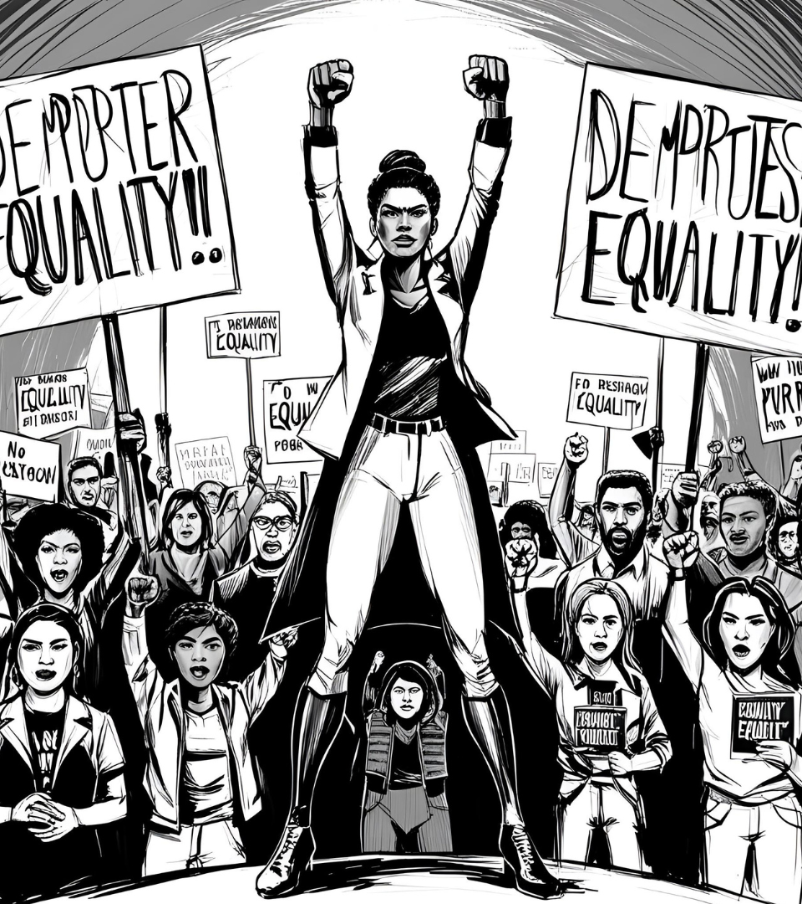

聯合國婦女署致力於推動全球性別平等，促進女性的經濟、政治、社會和文化權利。
目標是幫助各國政府和社會各界保障女性權益，確保女性能夠平等參與社會、經濟和政治活動。
重點領域：性別平等、女性政治參與、反對暴力、女性健康、經濟賦能等。
大赦國際是一個全球性的非政府人權組織，專注於捍衛個人和群體的基本權利，其中也包括女性的權利。
努力促使政府與企業採取有效措施，抵制性別歧視和暴力行為。
重點領域：反對強迫婚姻與早婚、爭取生育健康權、教育權、女性政治參與等。
台灣婦聯致力於推動婦女權益、爭取性別平等，並為女性在家庭、職場與政治中的處境發聲。
重點領域：反對性別暴力、性別歧視、強迫婚姻，並提供實質支持與倡議。